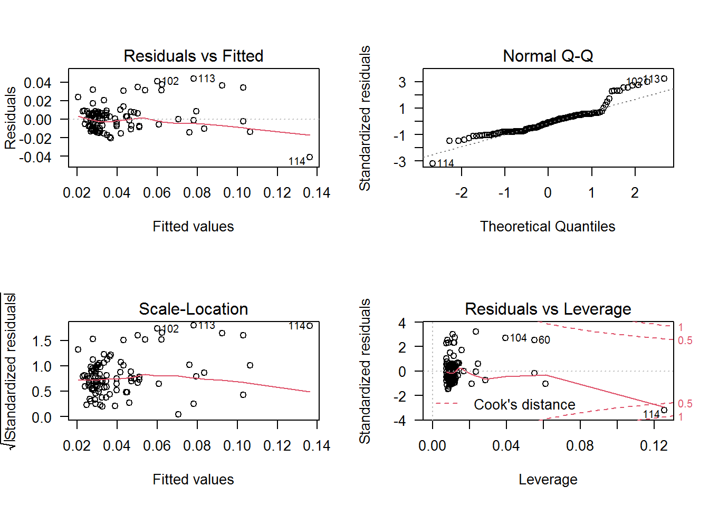
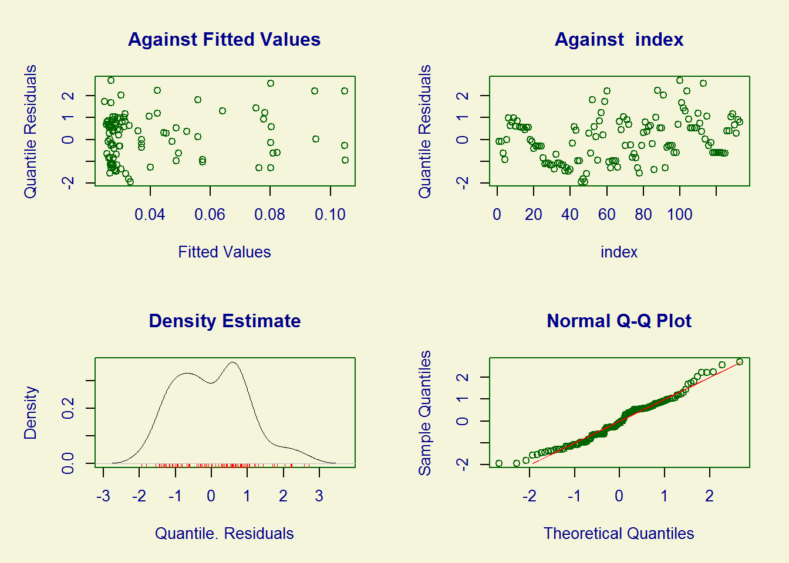

Lecture 1 A short path to GLM and GAM
1.1 Theory
This is a brief overview of popular regression models, based on Lyubchich et al. (2019).
Consider a general regression framework: \[\begin{equation} \tag{1.1} \mathbf{Y} = \boldsymbol{\mu} + \boldsymbol{\epsilon}, \end{equation}\] where \(\mathbf{Y}\) is an \(n\times1\) column vector comprising observations of the variable of interest (response variable); \(\boldsymbol{\mu}\) is an \(n\times1\) column vector of expected values \(\mathrm{E}(Y_i) \equiv \mu_i\); \(\boldsymbol{\epsilon}\) is an \(n\times1\) column vector of zero-mean random deviations from the expected values, \(i = 1,\ldots,n\); and \(n\) is the sample size.
1.1.1 Multiple linear regression
In case of a multiple linear regression, the mean response takes the form \[\begin{equation} \tag{1.2} \boldsymbol{\mu} = \mathbf{X}\boldsymbol{\beta}, \end{equation}\] where \(\mathbf{X}\) is an \(n\times(d+1)\) matrix with one column of 1’s for fitting an intercept in the model and the remaining \(d\) columns for \(d\) correlates (that is, explanatory variables) associated with the response variable; \(\boldsymbol{\beta}\) is a \((d+1)\times 1\) column vector of regression coefficients.
The estimation of regression model (1.2) and further inference are based on a number of assumptions about the validity of the form of the model (i.e., linearity of relationships between \(Y\) and each \(X\) variable), linear independence of the variables in \(\mathbf{X}\), relatively equal importance of all the \(n\) observations, as well as uncorrelatedness, homoscedasticity, and normality of errors \(\boldsymbol{\epsilon}\) (Chatterjee and Hadi 2006). However, the assumption of normality is often violated, and model (1.2) in its classical formulation cannot be used in majority of applied problems.
1.1.2 Generalized linear model (GLM)
Generalized linear models (GLMs) help to overcome the violation of normality assumption by extending the applicability of model (1.2) to exponential-type distributions, such as Poisson, binomial, and gamma (Wood 2006). In GLMs, distribution of \(Y_i\) belongs to a family of exponential distributions, and a smooth monotonic link function \(g(\cdot)\) is applied to transform the response variable: \[\begin{equation} \tag{1.3} g(\boldsymbol{\mu}) = \mathbf{X}\boldsymbol{\beta}. \end{equation}\] A distribution belongs to the exponential family of distributions if its probability density function can be written as:
\[f_{\theta}(y) = \exp[{y\theta - b(\theta)}/a(\phi) + c(y, \phi)],\] where \(b\), \(a\), and \(c\) are arbitrary functions, \(\phi\) and arbitrary ‘scale’ parameter, and \(\theta\) is the ‘canonical parameter’ of the distribution. For normal distribution, \(\theta = \mu\) and \(a(\phi) = \phi= \sigma^2\) (Wood 2006).
Canonical link functions are identity, ln, and inverse for normal, Poisson, and gamma distributions, respectively. After such transformation, however, model (1.3) still assumes linear relationships between each of the original variables in \(\mathbf{X}\) and the transformed response. Model (1.3) is applicable when the link function successfully linearizes the relationship between the risk variable and a predictor. In other cases, especially if there are multiple predictors, additional work on re-specifying the model may be required. For example, relationships between the response variable and different predictors may require different linearizing transformations, the relationships may be non-monotonic, and many of them may be thresholded (i.e., the effect of a covariate \(X\) is pronounced only when \(X\) takes on values from a certain range, such as the effect of daily precipitation on sediment concentrations in the streams is not noticeable below certain precipitation threshold).
1.1.3 Generalized additive model (GAM)
One way we can capture highly non-linear relationships is by inclusion of additional transformed \(X\)-variables, such as power transformed or thresholded variables (e.g., \(X_i^2\); \(\max(0, X_j - a)\)). However, adding tightly linked variables into the design matrix \(\mathbf{X}\) may introduce multicollinearity and affect the inference. An alternative way of modeling non-linearities is replacing the original variables with those individually transformed using smooth (nonparametric) functions, such as in a generalized additive model (GAM): \[\begin{equation} \tag{1.4} g(\boldsymbol{\mu}) = \mathbf{X}^*\boldsymbol{\beta}^* + f_1(X_1) + f_2(X_2) + f_3(X_3,X_4) + \ldots, \end{equation}\] where \(Y_i\) still follows one of the exponential-family distributions; \(\mathbf{X}^*\) and \(\boldsymbol{\beta}^*\) are the remaining variables and associated coefficients in strictly parametric formulation; \(f(\cdot)\) are smooth functions, often represented by regression splines (Wood 2006). Model (1.4) can easily deal with deviations from normality and can accommodate non-linearity and non-monotonicity of individual relationships, however, the model still fails to address the issue of remaining dependencies in the errors, e.g., see Kohn, Schimek, and Smith (2000).
1.1.4 Generalized additive model for location scale and shape (GAMLSS)
An extension of model (1.4) by Stasinopoulos and Rigby (2007) to \(k=1,2,3,4\) parameters \(\boldsymbol{\theta}_k\) of a distribution (not just the location parameter \(\mu_i\), but also scale \(\sigma_i\), and shape – skewness and kurtosis; can be generalized for \(k>4\)) allows fitting \(k\) individual models \[\begin{equation} \tag{1.5} g_k(\boldsymbol{\theta}_k) = h_k\left(\mathbf{X}_k,\boldsymbol{\beta}_k\right) + \sum_{j=1}^{J_k}h_{jk}(\mathbf{x}_{jk}), \end{equation}\] where \(k=1\) produces model for the mean; \(h_k(\cdot)\) and \(h_{jk}(\cdot)\) are non-linear functions; \(\boldsymbol{\beta}_k\) is a parameter vector of length \(J_k\); \(\mathbf{X}_k\) is an \(n\times J_k\) design matrix; \(\mathbf{x}_{jk}\) are vectors of length \(n\). The additive terms in this generalized additive model for location scale and shape (GAMLSS) provide a flexible framework to specify random effects and correlation structure as in mixed effects models (Zuur et al. 2009); see Table 3 by Stasinopoulos and Rigby (2007) for other possible specifications of the additive terms. Hence, models of the form (1.5) may be a good choice for insurance problems, because such models accommodate non-normal distributions, possibly highly non-linear relationships, and spatiotemporal dependencies in the data.
1.1.5 Generalized autoregressive moving average (GARMA)
Another group of models, called generalized autoregressive moving average (GARMA), was developed by Benjamin, Rigby, and Stasinopoulos (2003) as a combination of GLM (1.3) with Box–Jenkins approach of modeling temporal dependence: \[\begin{equation} \tag{1.6} g(\boldsymbol{\mu}_t) = \eta_t = \mathbf{X}_t\boldsymbol{\beta} + \sum_{j=1}^p{\phi_j \{ g(y_{t-j}) - \mathbf{X}_{t-j}\boldsymbol{\beta}\}} + \sum_{j=1}^q \theta_j \left\{ g(y_{t-j}) - \eta_{t-j}\right\}, \end{equation}\] where \(t=1,\ldots,n\) is the time index; \(\phi_j\), \(j=1,\ldots,p\), are autoregressive coefficients; \(\theta_j\), \(j=1,\ldots,q\), are moving average coefficients, and \(p\) and \(q\) are the autoregressive and moving average orders, respectively. Model (1.6) is efficient for dealing with individual time series.
1.1.6 Summary
Notice that the issue of different reliability of individual measurements can be solved in models (1.2)–(1.6) by introducing pre-defined weights in the estimation process. An automatic tuning of weights for improved model performance is possible with a number of boosting algorithms, such as AdaBoost.M1 (Hastie, Tibshirani, and Friedman 2009).
Overall, model (1.5) is a powerful and flexible choice for a variety of applied problems, when data exhibit complex spatiotemporal dependence and do not adhere to commonly used distributions, such as normal or Poisson.
The challenges of using the above statistical models include the choice of predictors, their transformations, distribution of the response variable, and model specification, which can be attempted with a variety of criteria (for example, Akaike and Bayesian information criteria – AIC and BIC) ubiquitous in statistical literature. Machine learning approaches offer more flexibility by relaxing the assumptions about distributions and forms of relationships, and providing automated solutions for learning meta-features from large amounts of data. At the same time, the large number of tuning parameters that inhere in a machine learning (especially in deep learning) method and their ability of changing the output or extending the computing time dramatically put out a warning for cautious implementation and interpretation of those methods.
1.2 Data example
Load needed packages: dplyr (Wickham et al. 2020), etc.
Select average water quality measurements in Chesapeake Bay for December 2010:
- Station: station at which the measurements were taken. There are 133 stations in the data file; at this time, we disregard the spatial patterns;
- DO: concentration of dissolved oxygen;
- CHLA: concentration of chlorophyll-a;
- SALINITY: water salinity;
- WTEMP: water temperature;
- TSS: concentration of total suspended solids;
- TN: concentration of total nitrogen;
- TP: concentration of total phosphorus.
Then try modeling TP with different methods.
D <- read.csv("./data/CBmonthly.csv") %>%
dplyr::filter(., Year == 2010 & Month == 12) %>%
dplyr::select(Station, DO, CHLA, SALINITY, WTEMP, TSS, TN, TP)
str(D)## 'data.frame': 133 obs. of 8 variables:
## $ Station : chr "CB1.1" "CB2.1" "CB2.2" "CB3.1" ...
## $ DO : num 14.2 14.2 13.4 12.7 12.2 ...
## $ CHLA : num 1.78 1.78 1.07 1.87 2.56 ...
## $ SALINITY: num 0 0 0.9 3.12 5.63 ...
## $ WTEMP : num 0.1 0.1 0.6 0.9 1.6 ...
## $ TSS : num 15.6 15.6 16.2 18.4 12 ...
## $ TN : num 1.66 1.66 1.55 1.25 1.12 ...
## $ TP : num 0.045 0.045 0.0403 0.0436 0.036 ...Plot data
1.2.1 Simple linear regression
For the simplest model, select a variable with the strongest correlation with TP: it is TSS. Our simple linear regression model is
\[TP_i = \beta_0 + \beta_1 TSS_i + \epsilon_i,\] where \(i = 1,\ldots,n\) (\(n =\) 133 is the sample size).
##
## Call:
## lm(formula = TP ~ TSS, data = D)
##
## Residuals:
## Min 1Q Median 3Q Max
## -0.041079 -0.010033 -0.001276 0.006457 0.043831
##
## Coefficients:
## Estimate Std. Error t value Pr(>|t|)
## (Intercept) 1.860e-02 1.801e-03 10.33 <2e-16 ***
## TSS 1.755e-03 9.059e-05 19.37 <2e-16 ***
## ---
## Signif. codes: 0 '***' 0.001 '**' 0.01 '*' 0.05 '.' 0.1 ' ' 1
##
## Residual standard error: 0.01375 on 131 degrees of freedom
## Multiple R-squared: 0.7412, Adjusted R-squared: 0.7393
## F-statistic: 375.3 on 1 and 131 DF, p-value: < 2.2e-16
The model clearly has problems.
1.2.2 Polynomial regression
Without modifying the response variable, apply a polynomial transformation to the explanatory variable, for example quadratic (informed by the plot). Our polynomial regression model is
\[TP_i = \beta_0 + \beta_1 TSS_i + \beta_2 TSS^2_i + \epsilon_i,\] Use function poly to create orthogonal polynomials:
##
## Call:
## lm(formula = TP ~ poly(TSS, 2), data = D)
##
## Residuals:
## Min 1Q Median 3Q Max
## -0.021327 -0.010286 -0.000931 0.005123 0.040019
##
## Coefficients:
## Estimate Std. Error t value Pr(>|t|)
## (Intercept) 0.044747 0.001156 38.72 < 2e-16 ***
## poly(TSS, 2)1 0.266399 0.013327 19.99 < 2e-16 ***
## poly(TSS, 2)2 -0.041043 0.013327 -3.08 0.00253 **
## ---
## Signif. codes: 0 '***' 0.001 '**' 0.01 '*' 0.05 '.' 0.1 ' ' 1
##
## Residual standard error: 0.01333 on 130 degrees of freedom
## Multiple R-squared: 0.7588, Adjusted R-squared: 0.7551
## F-statistic: 204.5 on 2 and 130 DF, p-value: < 2.2e-161.2.3 Power transformation
Apply Box–Cox method to select a power transformation for the response variable:
Check linearity after applying the transformation
Hence, the model looks like
\[\sqrt{TP_i} = \beta_0 + \beta_1 TSS_i + \epsilon_i\]
##
## Call:
## lm(formula = sqrt(TP) ~ TSS, data = D)
##
## Residuals:
## Min 1Q Median 3Q Max
## -0.090920 -0.017810 -0.002486 0.018862 0.082065
##
## Coefficients:
## Estimate Std. Error t value Pr(>|t|)
## (Intercept) 0.1470414 0.0042308 34.76 <2e-16 ***
## TSS 0.0037651 0.0002128 17.69 <2e-16 ***
## ---
## Signif. codes: 0 '***' 0.001 '**' 0.01 '*' 0.05 '.' 0.1 ' ' 1
##
## Residual standard error: 0.03231 on 131 degrees of freedom
## Multiple R-squared: 0.7049, Adjusted R-squared: 0.7027
## F-statistic: 313 on 1 and 131 DF, p-value: < 2.2e-16When plotting the fitted values, remember to back-transform
1.2.4 Generalized linear model (GLM)
Review the distribution of the response variable and select an appropriate one
Check linearity after applying the transformation (link function for the selected distribution)
##
## Call:
## glm(formula = TP ~ TSS, family = Gamma(link = "log"), data = D)
##
## Deviance Residuals:
## Min 1Q Median 3Q Max
## -0.77706 -0.20733 -0.01593 0.17525 0.80973
##
## Coefficients:
## Estimate Std. Error t value Pr(>|t|)
## (Intercept) -3.71136 0.04453 -83.34 <2e-16 ***
## TSS 0.03359 0.00224 15.00 <2e-16 ***
## ---
## Signif. codes: 0 '***' 0.001 '**' 0.01 '*' 0.05 '.' 0.1 ' ' 1
##
## (Dispersion parameter for Gamma family taken to be 0.1156311)
##
## Null deviance: 42.986 on 132 degrees of freedom
## Residual deviance: 15.270 on 131 degrees of freedom
## AIC: -771.27
##
## Number of Fisher Scoring iterations: 5Hence, the model is \[TP_i \sim Gamma\] \[\ln(\text{E}(TP_i)) = \beta_0 + \beta_1 TSS_i\]
When plotting the fitted values, remember to back-transform
plot(TP ~ TSS, data = D, las = 1)
pr <- predict(m4, newdata = D, se.fit = TRUE)
with(D, lines(x = sort(TSS), y = exp(pr$fit[order(TSS)]),
lwd = 2, col = "blue"))
1.2.5 Generalized additive model (GAM)
##
## Family: Gamma
## Link function: log
##
## Formula:
## TP ~ s(TSS)
##
## Parametric coefficients:
## Estimate Std. Error t value Pr(>|t|)
## (Intercept) -3.22297 0.02675 -120.5 <2e-16 ***
## ---
## Signif. codes: 0 '***' 0.001 '**' 0.01 '*' 0.05 '.' 0.1 ' ' 1
##
## Approximate significance of smooth terms:
## edf Ref.df F p-value
## s(TSS) 5.597 6.614 43.63 <2e-16 ***
## ---
## Signif. codes: 0 '***' 0.001 '**' 0.01 '*' 0.05 '.' 0.1 ' ' 1
##
## R-sq.(adj) = 0.789 Deviance explained = 71.9%
## GCV = 0.10045 Scale est. = 0.095193 n = 133The model is \[TP_i \sim Gamma\] \[\ln(\text{E}(TP_i)) = \beta_0 + f(TSS_i)\]
Visualize the smooth term. For identifiability, sum of the values of each curve, at the observed covariate values, must be zero.
Diagnostics
##
## Method: GCV Optimizer: outer newton
## full convergence after 3 iterations.
## Gradient range [1.729043e-10,1.729043e-10]
## (score 0.1004541 & scale 0.09519291).
## Hessian positive definite, eigenvalue range [0.0008269258,0.0008269258].
## Model rank = 10 / 10
##
## Basis dimension (k) checking results. Low p-value (k-index<1) may
## indicate that k is too low, especially if edf is close to k'.
##
## k' edf k-index p-value
## s(TSS) 9.0 5.6 0.91 0.18If family is not Gaussian (more specifically, if the link function is not identity), remember to back-transform
1.2.6 Generalized additive model for location scale and shape (GAMLSS)
Note that variance of residuals slightly increases with TSS. We can
- use generalized least squares (GLS) to transform the variables and stabilize the variance, or
- fit a separate model for variance, similar to the model for the mean.
Use the second approach in GAMLSS:
library(gamlss)
m6 <- gamlss(
TP ~ pb(TSS)
,sigma.formula = ~TSS
,family = GA
,data = D
#,control = gamlss.control(n.cyc = 100, c.crit = 0.9)
)## GAMLSS-RS iteration 1: Global Deviance = -821.986
## GAMLSS-RS iteration 2: Global Deviance = -825.3166
## GAMLSS-RS iteration 3: Global Deviance = -825.8326
## GAMLSS-RS iteration 4: Global Deviance = -825.8686
## GAMLSS-RS iteration 5: Global Deviance = -825.8733
## GAMLSS-RS iteration 6: Global Deviance = -825.874## ******************************************************************
## Family: c("GA", "Gamma")
##
## Call: gamlss(formula = TP ~ pb(TSS), sigma.formula = ~TSS,
## family = GA, data = D)
##
## Fitting method: RS()
##
## ------------------------------------------------------------------
## Mu link function: log
## Mu Coefficients:
## Estimate Std. Error t value Pr(>|t|)
## (Intercept) -3.70262 0.03757 -98.56 <2e-16 ***
## pb(TSS) 0.03220 0.00112 28.75 <2e-16 ***
## ---
## Signif. codes: 0 '***' 0.001 '**' 0.01 '*' 0.05 '.' 0.1 ' ' 1
##
## ------------------------------------------------------------------
## Sigma link function: log
## Sigma Coefficients:
## Estimate Std. Error t value Pr(>|t|)
## (Intercept) -0.921346 0.092819 -9.926 < 2e-16 ***
## TSS -0.023435 0.004775 -4.908 2.82e-06 ***
## ---
## Signif. codes: 0 '***' 0.001 '**' 0.01 '*' 0.05 '.' 0.1 ' ' 1
##
## ------------------------------------------------------------------
## NOTE: Additive smoothing terms exist in the formulas:
## i) Std. Error for smoothers are for the linear effect only.
## ii) Std. Error for the linear terms maybe are not accurate.
## ------------------------------------------------------------------
## No. of observations in the fit: 133
## Degrees of Freedom for the fit: 8.420713
## Residual Deg. of Freedom: 124.5793
## at cycle: 6
##
## Global Deviance: -825.874
## AIC: -809.0326
## SBC: -784.6938
## ******************************************************************In this case, we model both parameters of the distribution: \[TP_i \sim Gamma(\mu_i, \sigma_i)\] \[\ln(\text{E}(TP_i)) = \ln(\mu_i) = \beta_0 + f(TSS_i)\] \[\ln(\sigma_i) = c_0 + c_1TSS_i\]

## ******************************************************************
## Summary of the Quantile Residuals
## mean = -0.0008679401
## variance = 1.007634
## coef. of skewness = 0.3308549
## coef. of kurtosis = 2.612453
## Filliben correlation coefficient = 0.988048
## ******************************************************************1.2.7 Next steps
We have considered several models for the pair TP ~ TSS, without considering other variables yet. Need to carefully select an appropriate distribution family for modeling.
When modeling with smoothers we should consider the issue of concurvity (an analogue of collinearity in linear models), when smooth transformations of predictors ‘look alike.’ There are functions to check concurvity in R.
m7 <- gam(TP ~ s(TSS) + s(SALINITY) + s(TN) + s(WTEMP),
data = D, family = Gamma(link = log))
summary(m7)##
## Family: Gamma
## Link function: log
##
## Formula:
## TP ~ s(TSS) + s(SALINITY) + s(TN) + s(WTEMP)
##
## Parametric coefficients:
## Estimate Std. Error t value Pr(>|t|)
## (Intercept) -3.25604 0.01556 -209.2 <2e-16 ***
## ---
## Signif. codes: 0 '***' 0.001 '**' 0.01 '*' 0.05 '.' 0.1 ' ' 1
##
## Approximate significance of smooth terms:
## edf Ref.df F p-value
## s(TSS) 6.595 7.617 29.353 <2e-16 ***
## s(SALINITY) 6.923 7.966 10.892 <2e-16 ***
## s(TN) 1.000 1.000 0.519 0.473
## s(WTEMP) 7.342 8.298 7.683 <2e-16 ***
## ---
## Signif. codes: 0 '***' 0.001 '**' 0.01 '*' 0.05 '.' 0.1 ' ' 1
##
## R-sq.(adj) = 0.886 Deviance explained = 92.4%
## GCV = 0.035873 Scale est. = 0.032206 n = 133## para s(TSS) s(SALINITY) s(TN) s(WTEMP)
## worst 2.255338e-24 0.8492033 0.9328362 0.9342809 0.8218917
## observed 2.255338e-24 0.6554349 0.9203188 0.7103660 0.3510102
## estimate 2.255338e-24 0.5150905 0.8471733 0.5209155 0.7415149## para s(TSS) s(SALINITY) s(TN) s(WTEMP)
## para 1.000000e+00 1.696166e-27 1.054164e-28 2.357477e-28 6.180660e-28
## s(TSS) 7.907947e-25 1.000000e+00 4.507004e-01 2.590425e-01 1.895382e-01
## s(SALINITY) 6.370609e-26 2.829094e-01 1.000000e+00 3.382813e-01 6.017203e-01
## s(TN) 1.318787e-25 2.477700e-01 7.128446e-01 1.000000e+00 5.096872e-01
## s(WTEMP) 4.200428e-25 2.441318e-01 4.495728e-01 2.178949e-01 1.000000e+00Variable selection in GAM is more tedious than in linear models. A general recommendation for GAM is to do forward-selection: include only relevant meaningful variables, do not just throw everything into the model. Note that the model can hold a mix of smoothed and non-smoothed terms. For example, remove TN, do not smooth SALINITY:
m8 <- gam(TP ~ s(TSS) + SALINITY + s(WTEMP),
data = D, family = Gamma(link = log))
par(mfrow = c(1, 3))
plot(m8)
concurvity(m8, full = FALSE)$estimate## para s(TSS) s(WTEMP)
## para 1.000000e+00 1.696166e-27 6.180660e-28
## s(TSS) 7.944119e-25 1.000000e+00 1.895382e-01
## s(WTEMP) 4.226487e-25 2.441318e-01 1.000000e+00References
Benjamin, M. A., R. A. Rigby, and D. M. Stasinopoulos. 2003. “Generalized Autoregressive Moving Average Models.” Journal of the American Statistical Association 98 (461): 214–23. https://doi.org/10.1198/016214503388619238.
Chatterjee, S., and A. S. Hadi. 2006. Regression Analysis by Example. Hoboken, New Jersey: John Wiley & Sons.
Hastie, T. J., R. J. Tibshirani, and J. H. Friedman. 2009. The Elements of Statistical Learning: Data Mining, Inference, and Prediction. 2nd ed. New York: Springer. https://doi.org/10.1007/978-0-387-84858-7.
Kohn, R., M. G. Schimek, and M. Smith. 2000. “Spline and Kernel Regression for Dependent Data.” In Smoothing and Regression: Approaches, Computation, and Application, edited by M. G. Schimek, 135–58. New York: John Wiley & Sons, Inc. https://doi.org/10.1002/9781118150658.ch6.
Lyubchich, V., N. K. Newlands, A. Ghahari, T. Mahdi, and Y. R. Gel. 2019. “Insurance Risk Assessment in the Face of Climate Change: Integrating Data Science and Statistics.” Wiley Interdisciplinary Reviews: Computational Statistics 11: e1462. https://doi.org/10.1002/wics.1462.
Stasinopoulos, D. M., and R. A. Rigby. 2007. “Generalized Additive Models for Location Scale and Shape (GAMLSS) in R.” Journal of Statistical Software 23 (7): 1–46.
Wickham, Hadley, Romain François, Lionel Henry, and Kirill Müller. 2020. Dplyr: A Grammar of Data Manipulation. https://CRAN.R-project.org/package=dplyr.
Wood, S. N. 2006. Generalized Additive Models: An Introduction with R. New York: Chapman; Hall/CRC.
Zuur, A., E. N. Ieno, N. J. Walker, A. A. Saveliev, and G. M. Smith. 2009. Mixed Effects Models and Extensions in Ecology with R. New York: Springer. https://doi.org/10.1007/978-0-387-87458-6.